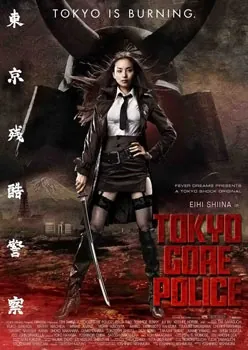

The genetics
Genetics serves as the pretext for the film's extreme body horror. The Key Man, a scientist driven by revenge, spreads a virus that rewrites the bodies of infected people, and he transforms himself by injecting the DNA of notorious criminals, as if criminality could be acquired by taking up their genes. The film treats this mutation as a way to criticise a violent, privatised police state: the Engineers are hunted and executed in public, and the authorities use the crisis to justify indiscriminate killings of anyone suspected of being infected. The scientist is portrayed both as a monster and as a victim of the corrupt system he attacks. The film, written and directed by Yoshihiro Nishimura, is deliberately excessive and makes no attempt at scientific credibility: injected DNA cannot transfer behaviour, and no virus could produce such transformations.
The story
In a dystopian Japan whose police force has been privatised, a mad scientist known as the Key Man has created a virus that turns humans into "Engineers", mutants whose wounds sprout grotesque biomechanical weapons. The police have formed a special squad of Engineer Hunters, who maintain order through sadistic violence and street executions. Ruka, a skilled hunter, is obsessed with finding the assassin who killed her father, a police officer, years before. The Key Man infects her by inserting a key-shaped tumour into her arm. Investigating, she learns that he is a scientist, Akino Miyama, whose father was the sniper hired to kill her father and was then murdered by the police commissioner, the real mastermind; Akino turned himself into the Key Man by injecting himself with the DNA of infamous criminals. Ruka kills Akino and, as her own body begins to mutate, takes revenge on the commissioner. A post-credits scene shows that the Key Man survived.